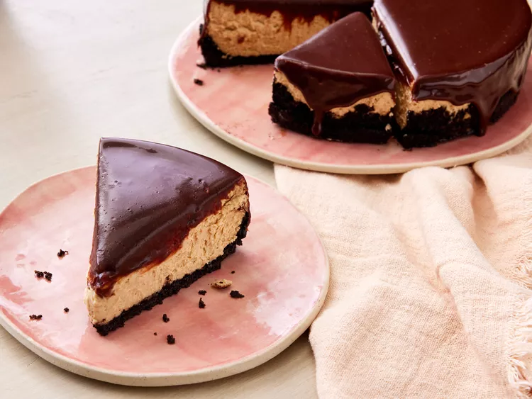
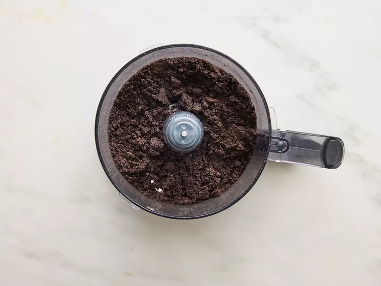
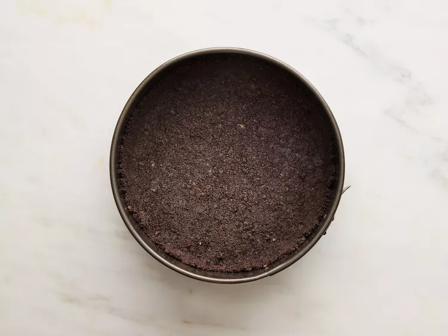
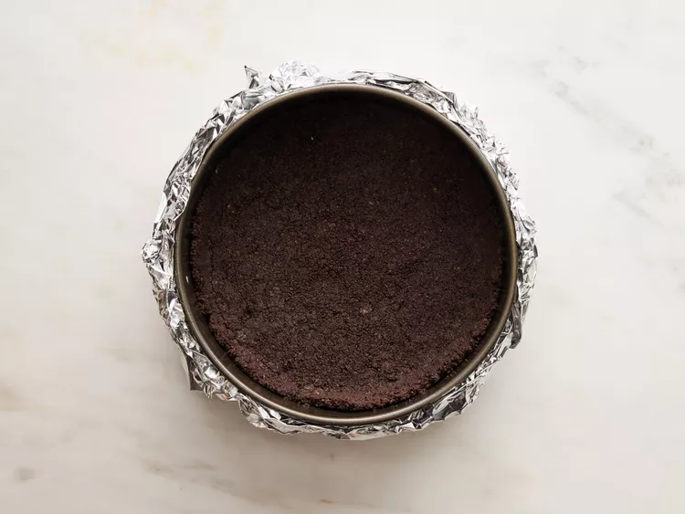
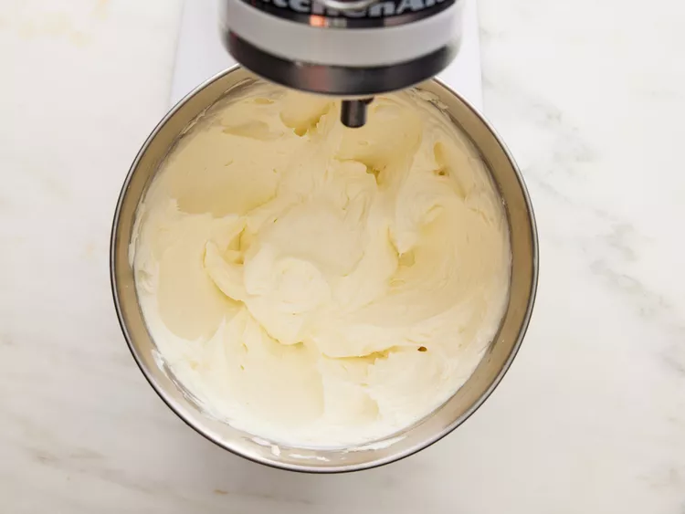
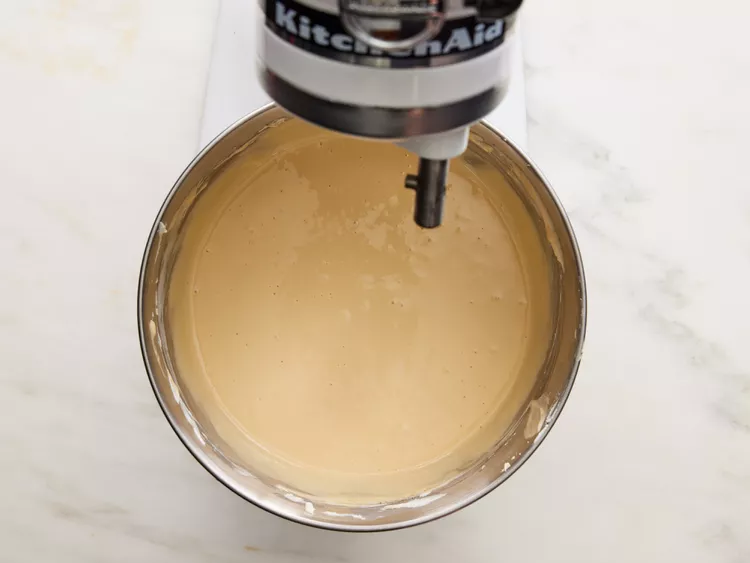

This Baileys cheesecake has a delicious mocha-flavored crust and a super creamy filling. It's topped with a smooth chocolate ganache for a decadent dessert no one will be able to resist!
Preheat the oven to 350 degrees F (175 degrees C) with rack in lower third position. Lightly grease an 8-inch springform pan with cooking spray and line with parchment on the bottom.
Process cookies in a food processor until ground into small crumbs, 2 to 3 minutes. Pour in melted butter and process for another 30 seconds.
Press evenly into bottom and about 1 inch up sides of prepared pan.
Bake in the preheated oven until firm and fragrant, 10 to 12 minutes. Let cool slightly while making the filling, about 10 minutes.
Reduce oven temperature to 300 degrees F (150 degrees C).
Once crust is cooled, wrap bottom of pan with 2 layers of heavy-duty aluminum foil to prevent water from seeping into pan.
To make the cheesecake filling: Add cream cheese to the bowl of a stand mixer fitted with the paddle attachment and beat on medium-low speed until creamy, about 2 minutes. Add sour cream, and beat on medium-low speed until fully combined, scraping down sides of bowl halfway through, about 2 minutes.
Beat in sugar, espresso powder, vanilla, and salt, until combined, scraping down the sides of the bowl halfway through, about 1 minute. Add eggs, 1 at a time, beating on low speed just until combined after each addition and scraping down sides of bowl with a rubber spatula, 1 to 2 minutes.
Add Baileys and beat on low speed until just combined, about 45 seconds.
Pour filling onto cooled crust. Place spring form pan into a larger roasting pan and place in preheated oven. Pour 1 1/2 cups of water in roasting pan and bake until the cheesecake is almost set (the center 2 inches should jiggle slightly) and edges have pulled away slightly from pan, 50 to 60 minutes.

Turn off oven and leave door cracked open about 7 to 8 inches; let cheesecake stand in oven 30 minutes. Remove from oven and carefully lift cheesecake from water bath. Cover and chill at least 3 hours or overnight.
:max_bytes(150000):strip_icc():format(webp)/7255780-Baileys-Cheesecake-ddmfs--step-8-c127fb2369cf4f78973ff91d54f697ba.jpg)
To make the ganache: Heat cream and Baileys in a small saucepan over medium heat until warm to the touch, 3 to 4 minutes. Stir in espresso powder until fully combined. Add chocolate chips and let stand 1 minute; stir until smooth.
:max_bytes(150000):strip_icc():format(webp)/7255780-Baileys-Cheesecake-ddmfs--step-9-fc780f9eb3f24b01a44a04196210ab90.jpg)
Remove cheesecake from pan and place on a cake plate. Pour ganache evenly over chilled cheesecake, spreading slightly over edges with an offset spatula. Refrigerate until ganache is firm, about 30 minutes.
:max_bytes(150000):strip_icc():format(webp)/7255780-Baileys-Cheesecake-ddmfs--step-10-b91a57e64b294235aadeaf2368e8ec45.jpg)